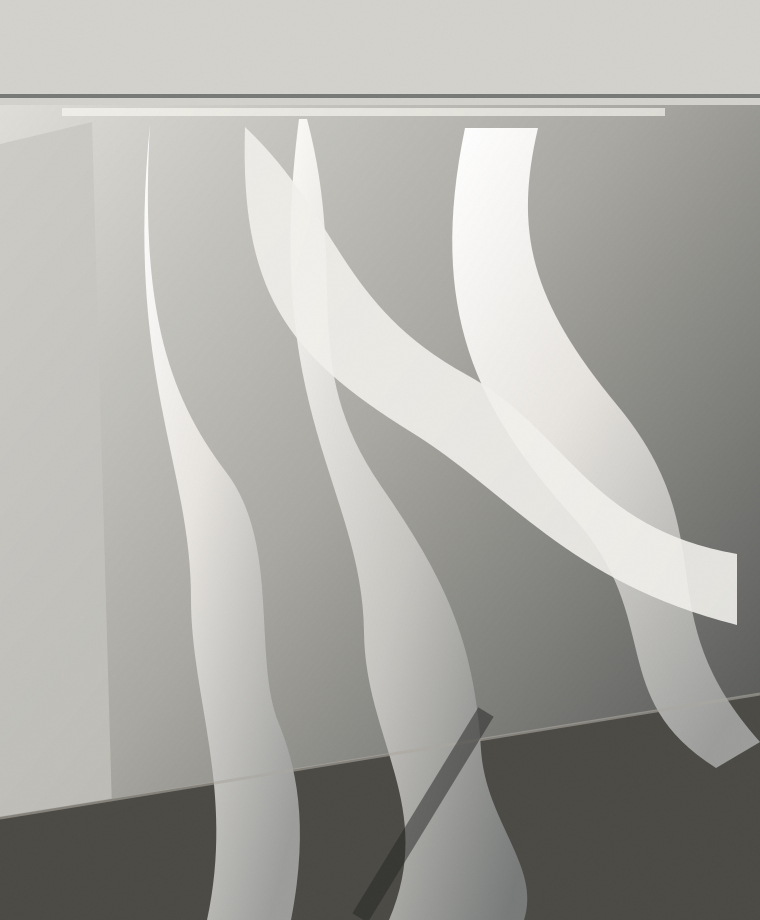

Fashion · Digital Content · Ulsan, KR
PerfectForm,ImperfectStructure.
Reframing the relationship
between body, garment & image.
A practice moving between deconstructed fashion and digital experiences.
Explore selected work↘
Selected Work(12)
A selection across garment, image and interactive media.
Concept preview · All project titles and images below are illustrative examples.
Statement
A point of view across body, garment and media.
I question the order of clothing to reveal the beauty of the body in unexpected ways.
My fashion practice begins with the human form. Through deconstruction, asymmetry and reconfigured function, I reshape how clothing surrounds the body. In digital content, I plan and create experiences across web, UX/UI, games, information, typography, moving image and AI-assisted exploration. I see both disciplines as ways to reorganize form and communication, creating new relationships between body, image and audience.
Perfect Form,
Imperfect Structure.
About Me
Fashion designer / digital content maker
I design between structure and its undoing.
I study Fashion and Digital Content Design at the University of Ulsan. My work moves between garments and digital media, guided by a curiosity about how form shapes the way we see and experience the body.
Profile / CV
Selected skills and experience
Let's connect.
Contact details will be added here.